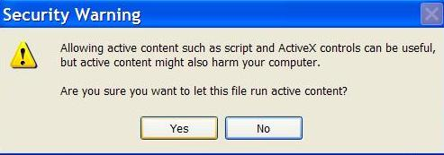

If you currently see this:
Click the bar with the warning. Then click the bar and "Allow Block Content". Then you should see this:

Then click "Yes" and you should be able to use all advanced features of the Torque Documentation Framework.